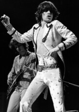
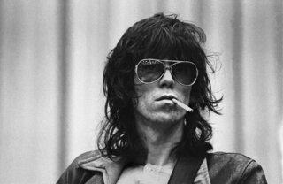
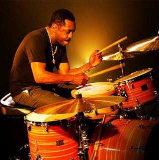

Miembros activos:

Mick
El frontman ideal, sus atrevidos movimientos, su voz cruda y carisma llevo a Michael Jagger a liderar la mejor y más grande banda de todos los tiemposLeer más

Keith
Un genio musical, carismatico y rebelde, fuera de las controversias el verdadero lider de la banda es una leyenda viviente junto con su colaboración con Mick..Leer más

Ronnie
Casi 50 años luego de su adición a la banda el 'chico nuevo' es quizás la persona mas cool de toda la industria musical y un talento indiscutible.Leer más

Steve
Luego de la muerte del historico Charlie Watts, vino para llenar sus zapatos con su bendición, siendo antiguo compañero de banda de KeithLeer más